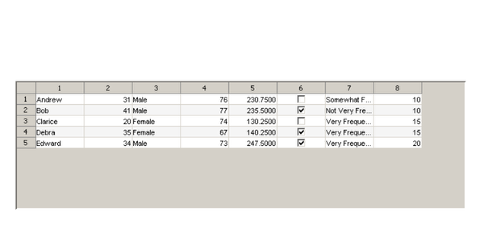

Displaying Matrix Data in a GUI
This is a demonstration of how to display matrix data in a GUI using the uitable component. It shows how to display simple numeric matrix data, as well as more complex data. It also shows how to modify the appearance of the uitable and how to limit the changes that end users can make to the data in the uitable.
Contents
Using Simple Numeric Data
First, create a figure and position a uitable in it.
f = figure('Position', [100 100 752 350]); t = uitable('Parent', f, 'Position', [25 25 700 200]);

Now, create some simple numeric data and set it into the uitable using the Data property. For this example, use a magic square.
set(t, 'Data', magic(10));

Using Mixed Data Types
Next, replace the simple numeric data with a more complicated matrix. First, create some new data that contains a mix of numeric, character, and logical values. Then, set the new matrix into the uitable's 'Data' property.
complexData = { ...
'Andrew' 31 'Male' 76 230.75 false 'Somewhat Frequently' 10; ...
'Bob' 41 'Male' 77 235.5 true 'Not Very Frequently' 10; ...
'Clarice' 20 'Female' 74 130.25 false 'Very Frequently' 15; ...
'Debra' 35 'Female' 67 140.25 true 'Very Frequently' 15;
'Edward' 34 'Male' 73 247.5 true 'Very Frequently' 20};
set(t, 'Data', complexData);
 Customizing the Display
Now that the complex data is in the uitable, customize the display to make the information more meaningful. Start by using the ColumnName property to add headings, or titles, to the top of each column. To create multi-line headings, use the divider line symbol.
set(t, 'ColumnName', {'Name', 'Age', 'Gender', 'Height', 'Weight', ... 'Stress|Tests', 'Exercise|Frequency', 'Copay'});

Next, adjust the widths of some of the columns using the ColumnWidth property. Set a specific width for two of the columns, leaving the rest of the columns to autofit based on the contents.
set(t, 'ColumnWidth', {100 'auto' 'auto' 'auto' 'auto' 'auto' 150 'auto'});

Now, completely remove the row header by setting the RowName property to empty, using [].
set(t, 'RowName', []);

Resize the uitable to remove any extra space.
set(t, 'Position', [25 25 702 119]);

Finally, change the foreground and background colors using the ForegroundColor and BackgroundColor properties. As you can see, the RowStriping property is on by default. This means the uitable shows multiple, in this case two, background colors. To keep the striping effect, specify two different background colors. Note: Turn off row striping by setting the RowStriping property to 'off'.
foregroundColor = [1 1 1]; set(t, 'ForegroundColor', foregroundColor); backgroundColor = [.4 .1 .1; .1 .1 .4]; set(t, 'BackgroundColor', backgroundColor);

Allowing Restricted Editing
Now that the uitable looks the way it should, allow users to edit the data from the GUI using the ColumnEditable property. However, limit the users' editing capabilities. First, enable editing on all of the columns except the first one so users will not be able to modify the values in the Name column.
set(t, 'ColumnEditable', [false true true true true true true true]);

Next, use the ColumnFormat property to change the format of the Gender and Exercise Frequency columns to pop-up menus with a restricted set of options. In the Gender column, force users to choose between the values Male and Female. In the Exercise Frequency column, make users choose among the options: Very Frequently, Somewhat Frequently, and Not Very Frequently.
set(t, 'ColumnFormat', {[] [] {'Male' 'Female'} [] [] [] ... {'Very Frequently' 'Somewhat Frequently' 'Not Very Frequently'} []});

Finally, restrict the values in the Age column to be between 0 and 120. Do this by attaching a CellEditCallback to validate edits made to the uitable data. Use the following callback function:
function AgeVerificationCallback(o, e)
if (e.Indices(2) == 2 && ...
(e.NewData < 0 || e.NewData > 120))
tableData = get(o, 'data');
tableData{e.Indices(1), e.Indices(2)} = e.PreviousData;
set(o, 'data', tableData);
error('Age value must be between 0 and 120.')
endBy attaching this function as the CellEditCallback, if the edit to the value in the Age column does not fall within the acceptable range (i.e., between 0 and 120), the change will not be accepted. In other words, the value in the cell will revert back to the original value.
set(t, 'CellEditCallback', @AgeVerificationCallback);